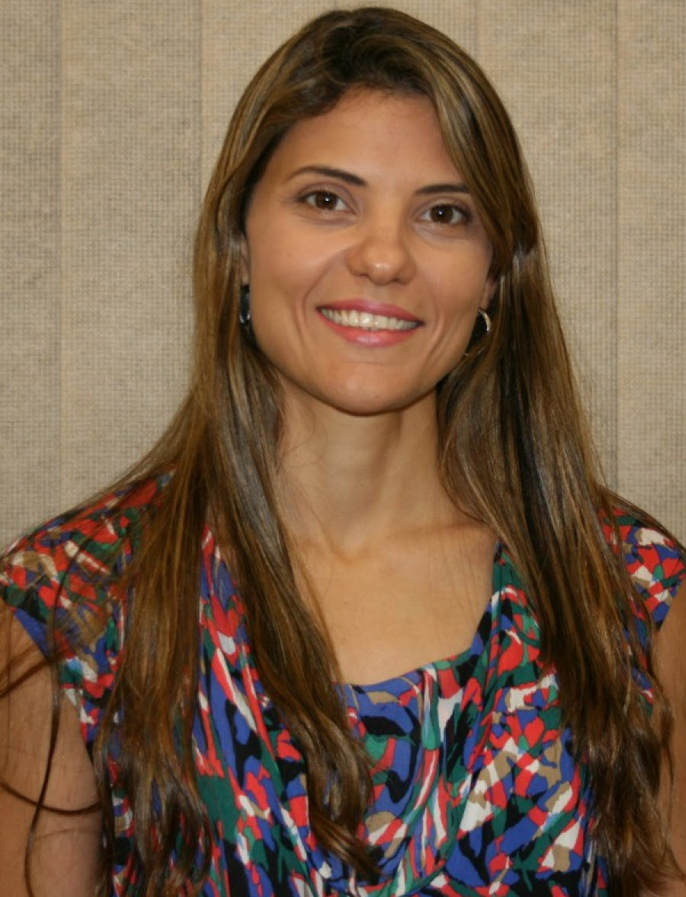
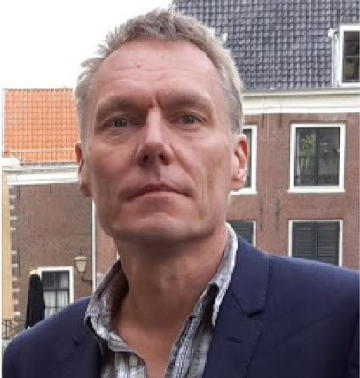

Conferencistas.
Conferencistas magistrales internacionales invitados a la edición fundacional del Encuentro Internacional de Semilleros de Investigación (I EISI 2020).
Conferencistas Magistrales Invitados
Ingeniero de Alimentos (UNICAMP) con MBA en Gestión Empresarial por la Fundação Getúlio Vargas (FGV) y Maestría en Compostaje. Responsable de los programas Evento Neutro y CO2 Neutro para inventarios de emisiones, logística verde y sostenibilidad corporativa.

Doctora en Ingeniería (EESC/USP) y Posdoctora en Ingeniería de Producción (UNESP). Investigadora líder en Business Process Management (BPM), sostenibilidad organizacional y alineación estratégica entre negocios y tecnologías de la información.

Magíster y Doctor en Ciencias Sociales y Pedagogía por la Universidad de Bielefeld (Alemania). Especialista en reconversión industrial en la cuenca del Ruhr, comercio justo y responsabilidad social empresarial en comunidades mineras e industriales.
Afiches, fotografías y registro visual (4)


Instituciones Organizadoras y Aliadas
 Universidad Nacional de Colombia
Universidad Nacional de Colombia
 Grupo Geyma · UNAL Medellín
Grupo Geyma · UNAL Medellín
 Semillero PREXIA · UNAL
Semillero PREXIA · UNAL
 Facultad de Ciencias Agrarias · UNAL
Facultad de Ciencias Agrarias · UNAL
 UNESP · São Paulo, Brasil
UNESP · São Paulo, Brasil
 UNESP · Campus Jaboticabal
UNESP · Campus Jaboticabal
 Instituto A Nau Ciranda · Brasil
Instituto A Nau Ciranda · Brasil